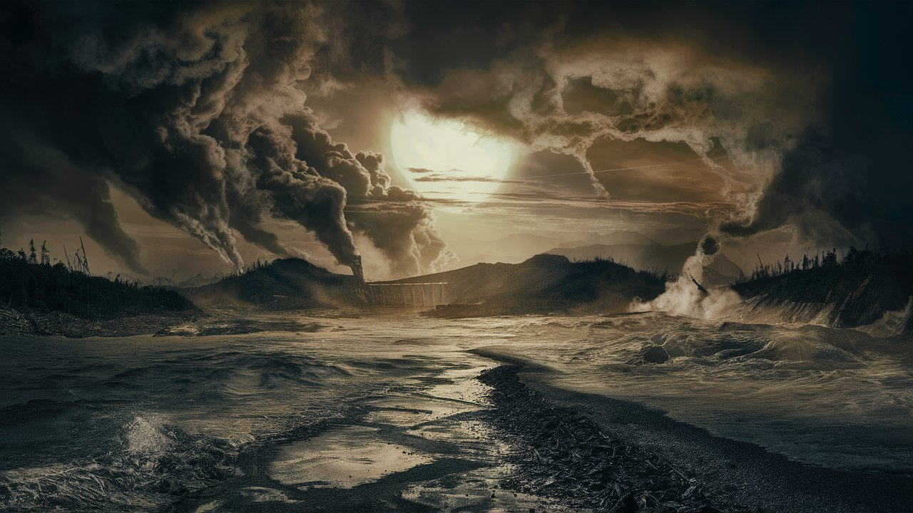
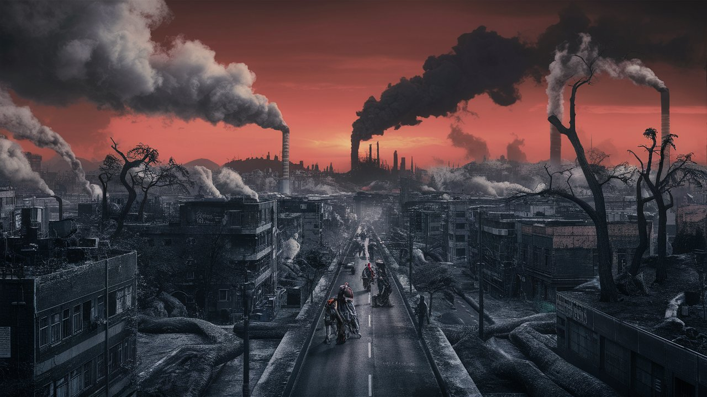
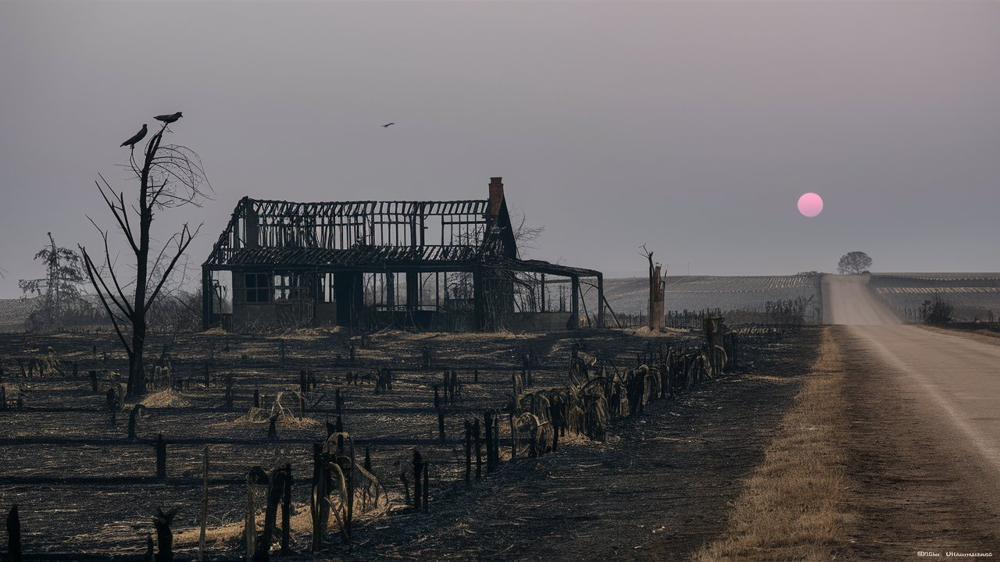
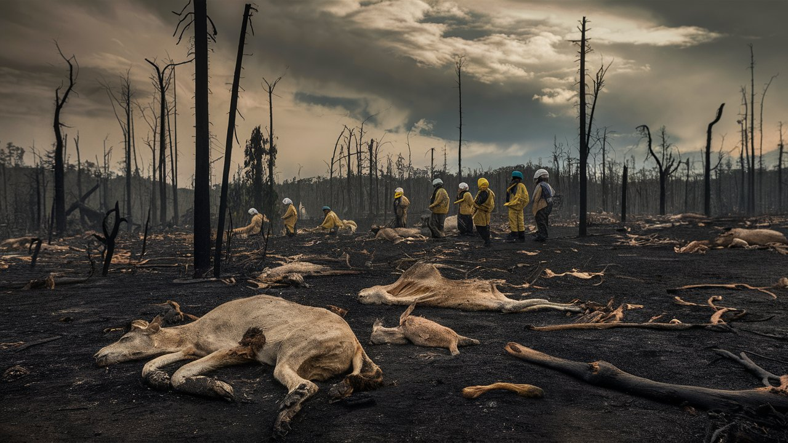
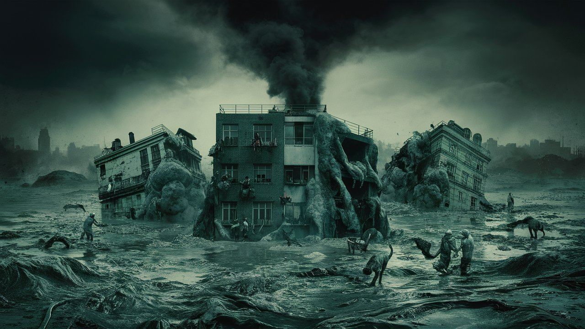
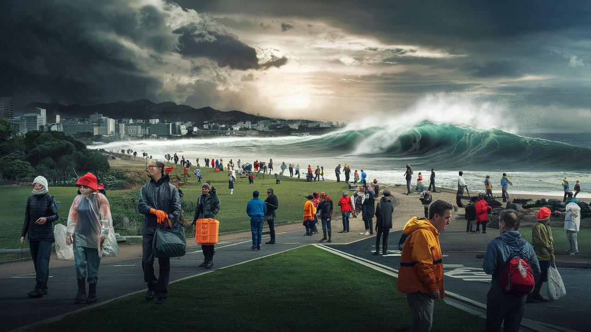

An environmental disaster is a catastrophic event that negatively impacts the natural environment, often due to human activities. These disasters can cause significant harm to ecosystems, wildlife, and human health.
Types of Environmental Disasters

Pollution Disasters
Events where harmful substances contaminate the environment.

Industrial Disasters
Accidents in industrial settings that release hazardous materials.

Agricultural Disasters
Events that severely impact agricultural productivity.

Biodiversity Disasters
Incidents that lead to significant loss of species and habitats .

Natural Disasters with Environmental Impact
Natural events that cause environmental damage.
General Precautions

Taking precautions before, during, and after environmental disasters can significantly reduce risks and enhance safety. Here are some general precautions: (click images)
Environmental disasters, whether stemming from human activities or natural events, pose significant threats to ecosystems, human health, and economies. Addressing these challenges requires a multifaceted approach that includes prevention, preparedness, and response strategies. By implementing strict regulations, promoting sustainable practices, and developing robust disaster response plans, we can mitigate the impacts of pollution, industrial accidents, agricultural crises, biodiversity loss, and natural disasters. Through collective efforts and a commitment to environmental stewardship, we can work towards a more resilient and sustainable future for our planet. 🌍
.png)
.png)